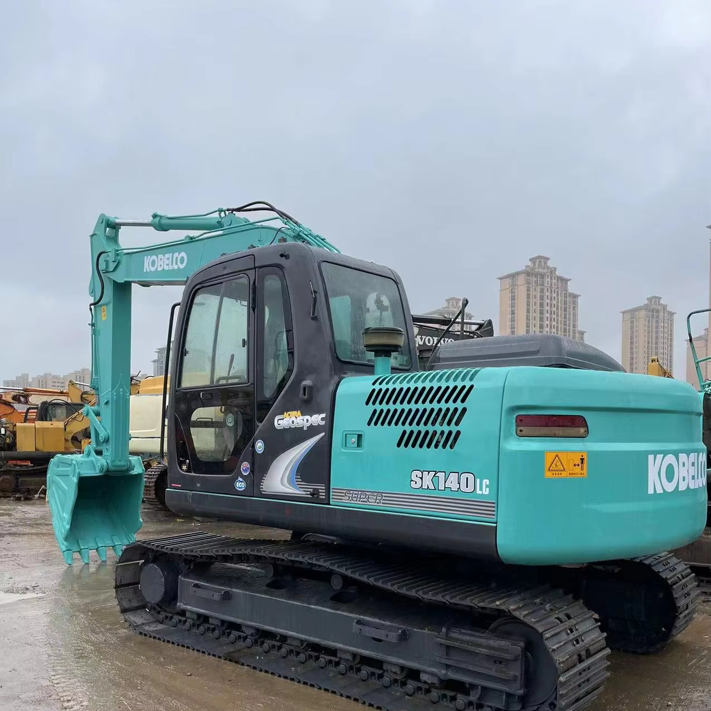

Refurbished Kobelco SK140 Excavator
The Kobelco SK140 is a mid-size, 14-ton class crawler excavator designed for a wide range of applications, including construction, landscaping, and utilities work. This versatile machine offers the ideal balance of power, precision, and fuel efficiency, making it a popular choice for contractors and rental companies. A refurbished Kobelco SK140 excavator can provide exceptional value while still delivering the performance and reliability that the Kobelco brand is known for.
Honestly, it's almost impossible to buy a brand new excavator from China. They either don't exist or are made in China. If a Chinese seller tells you their Caterpillar/Komatsu/Volvo/Kobelco/Hitachi is brand new, they're lying. Therefore, a refurbished excavator is your best bet.

Here are the detailed specifications for a refurbished Kobelco SK140LC-8 or SK140LC-10 excavator:
Operating Weight and Dimensions
- Operating Weight: 13,800–14,500 kg
- Overall Length: ~8.0–8.3 meters
- Overall Width: ~2.59–2.8 meters
- Overall Height: ~2.9–3.0 meters
- Tail Swing Radius: ~2.35 meters
- Ground Clearance: ~440 mm
- Track Width: 500–600 mm standard
Engine and Powertrain
- Engine Model:
- SK140LC-8: Isuzu AM-4JJ1X
- SK140LC-10: HINO J05E Tier 4 Final
- Rated Power Output: ~105–110 hp (78–82 kW) @ 2,000 rpm
- Maximum Torque: ~500–550 Nm
- Fuel Tank Capacity: ~300 liters
- Travel Speed: 3.5–5.5 km/h
- Swing Speed: ~11 rpm
- Gradeability: Up to 35°
Hydraulic System
- Main Pump Type: Variable displacement axial piston pump
- Flow Rate: ~2 × 160–180 L/min
- System Pressure: Up to 31.5 MPa
- Hydraulic Oil Capacity: ~220 liters
- Boom Cylinder Bore: ~120 mm
- Arm Cylinder Bore: ~105 mm
- Bucket Cylinder Bore: ~95 mm
Performance Metrics
- Bucket Capacity: 0.5–0.65 m³
- Max Digging Depth: ~5.5–5.7 meters
- Max Reach (Horizontal): ~8.8–9.1 meters
- Max Dump Height: ~5.8–6.0 meters
- Bucket Digging Force: ~105–110 kN
- Arm Digging Force: ~70–75 kN
Cab and Operator Features
- Cab Type: ROPS/FOPS certified
- Display: Color LCD monitor with diagnostics and fuel tracking
- Controls: Electro-hydraulic joysticks with customizable sensitivity
- Comfort: Air-conditioned cab, high-back suspension seat, noise-insulated interior
- Visibility: Wide glass area, rear-view camera, LED work lights
Smart Features and Efficiency
- Fuel Efficiency: VG turbocharger + high-pressure common rail injection
- Emissions Control: EGR cooler + DPF system (Tier 4 Final compliant in SK140LC-10)
- Auto Idle & Eco Mode: Reduces fuel consumption during low-load operations
- Telematics Ready: KOMEXS system for remote diagnostics and fleet tracking
Attachments Compatibility
- Standard Bucket: 0.5–0.65 m³
- Optional Tools: Hydraulic breaker, demolition shear, compactor, ripper
- Quick Coupler: Hydraulic or manual options available
Refurbishment Scope
Refurbished SK140 units typically include:
- Engine overhaul (injectors, turbo, seals, DPF cleaning if applicable)
- Hydraulic pump recalibration or replacement
- Electrical system rewiring and sensor testing
- Cab restoration (seat, controls, HVAC, monitor)
- Structural repairs (boom welding, bushing replacement, repainting)
Overview of the Kobelco SK140 Excavator
The Kobelco SK140 is well-regarded for its smooth and efficient performance in various work environments. Designed to handle demanding tasks such as trenching, digging, and lifting, the SK140 excels in construction and earthmoving tasks, particularly in tight spaces where maneuverability is crucial. Refurbished models offer a great cost-effective alternative to new equipment, especially for businesses looking to keep their expenses in check.
Key Specifications of the Kobelco SK140
-
Operating Weight: Approximately 14,000 kg (30,865 lbs)
-
Engine Power: 93 kW (125 horsepower)
-
Bucket Capacity: Typically ranges from 0.4 to 0.6 cubic meters.
-
Max Digging Depth: Up to 6.2 meters (20.3 feet)
-
Max Reach: 9.2 meters (30.2 feet)
-
Max Lifting Capacity: 3,000 kg (6,600 lbs) at a radius of 3 meters
The SK140 is designed to provide ample power for demanding tasks while being fuel-efficient and easy to maintain. The machine’s design combines advanced technology with simplicity, resulting in a unit that is both reliable and user-friendly.
Key Features of the Kobelco SK140 Excavator
Powerful and Fuel-Efficient Engine
The Kobelco SK140 is powered by a high-performance Isuzu engine, producing 125 horsepower. This engine delivers the necessary power for heavy-duty tasks while also offering fuel efficiency. The SK140’s low fuel consumption helps reduce operating costs, making it an ideal machine for long-term projects and rental applications where fuel efficiency is a key concern.
Kobelco has integrated advanced eco-mode technology into the SK140 to ensure even greater fuel savings, allowing operators to adjust performance depending on the work environment. This feature helps minimize emissions and lowers the overall cost of operation.
Hydraulic System for Smooth Operations
The hydraulic system of the Kobelco SK140 is designed to deliver high performance while maintaining fuel efficiency. With a load-sensing hydraulic system, the machine adjusts hydraulic power based on load demands, optimizing performance for various tasks such as digging, lifting, and material handling.
-
Variable Displacement Pump: The SK140 utilizes a variable displacement pump that adjusts hydraulic flow based on the load, offering smoother operation, faster cycle times, and reduced fuel consumption.
-
Hydraulic Pressure Control: The system’s pressure is adjusted according to the task at hand, maximizing energy efficiency and prolonging the life of the machine’s components.
This hydraulic system allows for more precise control over digging and lifting tasks, making the Kobelco SK140 well-suited for applications requiring fine control, such as trenching, landscaping, and utility installations.
Operator Comfort and Cabin Design
Operator comfort is a priority with the Kobelco SK140, which features a spacious, ergonomic cabin. The cabin is designed to reduce operator fatigue during long hours of operation, improving overall productivity. Some key features include:
-
Comfortable Seat and Adjustable Controls: The SK140’s operator seat is designed for comfort, with full adjustability to suit operators of different sizes. The controls are well-placed and intuitive, making it easy for the operator to perform tasks with minimal physical strain.
-
Wide Visibility: The cabin is designed to provide excellent visibility of the working area, reducing blind spots and increasing safety during operation. Large windows and a minimalistic design enhance the operator’s view of the boom and worksite.
-
Climate Control: For working in extreme weather conditions, the SK140 is equipped with a heating and air-conditioning system to keep the operator comfortable regardless of the external environment.
Undercarriage and Durability
The Kobelco SK140 is built with a robust undercarriage that can withstand the demands of rough terrain. The durable steel tracks provide excellent traction on both soft and firm surfaces, making the SK140 suitable for use on construction sites, as well as in landscaping and agricultural applications.
-
Track Frame and Rollers: The machine’s undercarriage is designed to handle heavy-duty work, and the track frame and rollers are built to resist wear from harsh working conditions.
-
Ground Clearance: The SK140 features ample ground clearance, making it easier to operate on uneven surfaces and ensuring that the machine’s components are protected from debris and obstacles.
Benefits of Purchasing a Refurbished Kobelco SK140 Excavator
Purchasing a refurbished Kobelco SK140 offers several advantages for businesses and contractors looking for a quality excavator at a lower price point.
Cost Savings
A refurbished SK140 can save businesses up to 30-40% compared to the cost of a new machine. The lower purchase price allows businesses to reinvest the savings into other areas of operation or upgrade other equipment. For small to mid-sized businesses, this cost-effective approach is a great way to access high-quality machinery without the financial burden of buying new equipment.
Certified Refurbishment Process
Refurbished units go through a rigorous refurbishment process conducted by qualified technicians. During this process, the machine is thoroughly inspected, and worn-out components are replaced or repaired to restore the excavator to factory standards. Refurbishment typically includes:
-
Engine and hydraulic system checks
-
Repainting of the exterior for a fresh appearance
-
Replacement of worn parts, including seals, filters, and hoses
-
Full testing to ensure all systems are functioning optimally
After refurbishment, the machine often comes with a warranty, giving you additional peace of mind.
Environmental Benefits
By purchasing a refurbished unit, you contribute to sustainability by reducing the need for new manufacturing and lowering the environmental impact. Refurbishing equipment is an environmentally friendly alternative to buying new and helps reduce the overall carbon footprint of the construction and machinery industries.
Maintenance and Care for the Kobelco SK140 Excavator
To ensure the longevity and optimal performance of the refurbished SK140, regular maintenance is crucial. Here are some key maintenance tips to keep the excavator running smoothly:
Engine Maintenance
-
Perform regular oil and filter changes as per the manufacturer’s specifications to prevent engine damage and maintain efficiency.
-
Inspect the air filters for dust and debris accumulation, and replace them when necessary to ensure the engine gets clean air.
Hydraulic System Maintenance
-
Check hydraulic fluid levels regularly and inspect the system for leaks.
-
Replace hydraulic filters periodically to prevent contamination in the hydraulic system.
-
Ensure the hydraulic hoses and connections are in good condition, and replace any worn or cracked hoses promptly.
Undercarriage Maintenance
-
Regularly check the condition of the tracks, rollers, and sprockets. Ensure the tracks are properly tensioned and replace worn-out tracks to avoid unnecessary strain on the undercarriage.
-
Clean the undercarriage after operation to remove dirt and debris, which can cause excessive wear.
-
Lubricate the undercarriage components to reduce friction and extend their life.
Cabin Maintenance
-
Keep the cabin clean to ensure good visibility and a comfortable working environment for the operator.
-
Regularly inspect the air-conditioning and heating system to ensure it’s functioning properly.
Conclusion
The Kobelco SK140 is a versatile and durable excavator that provides exceptional performance for various construction and excavation tasks. With its powerful engine, efficient hydraulic system, and operator-friendly features, it’s a great choice for a wide range of projects.
Opting for a refurbished Kobelco SK140 allows businesses to access this reliable and capable machine at a significantly reduced price while still benefiting from its robust performance. By performing regular maintenance and ensuring proper care, the Kobelco SK140 can deliver years of dependable service, making it an excellent addition to any fleet.
Our Commitment
- 2 years / 4000 hours warranty.
- EPA certified.
- No sweatshop labor.
Contacts

- [email protected]
- Youtube Instagram Facebook
- Navigation: G206 (Sishu Bridge) in Changfeng County, Hefei City, Anhui Province, 200 meters north to the east